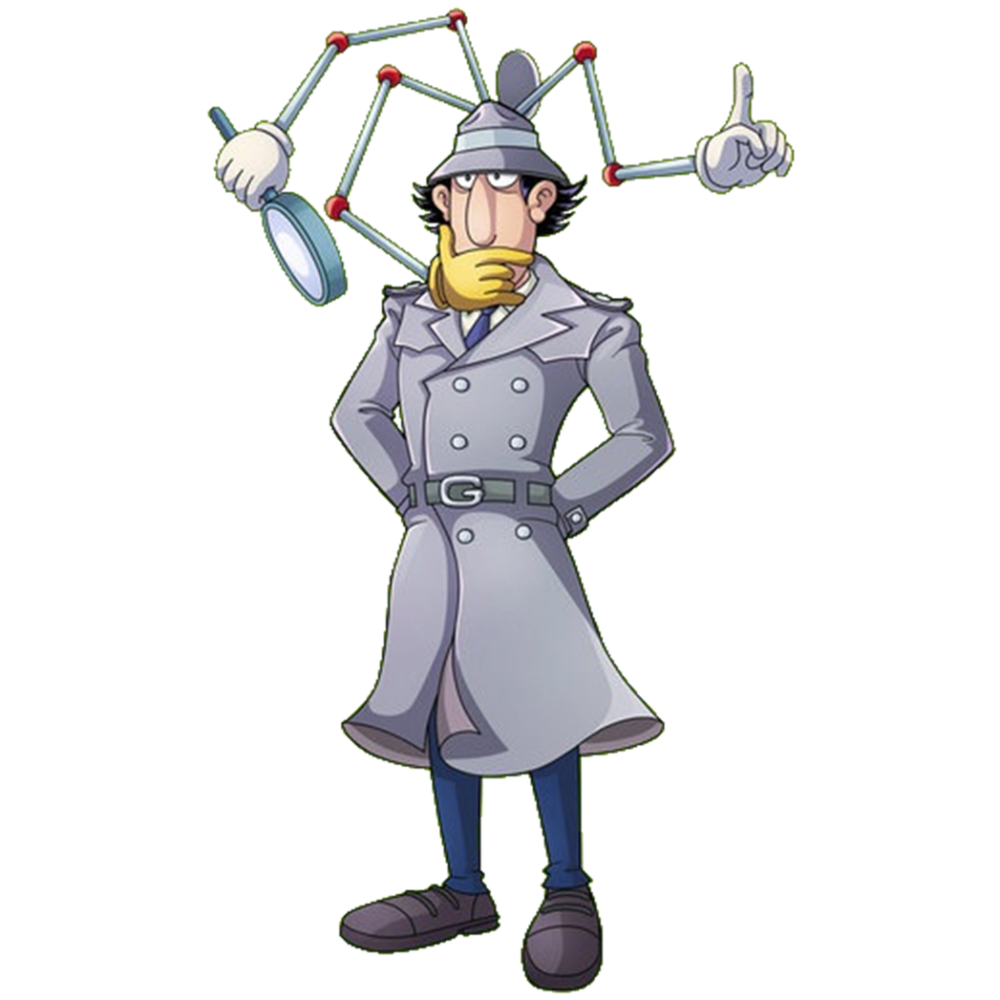
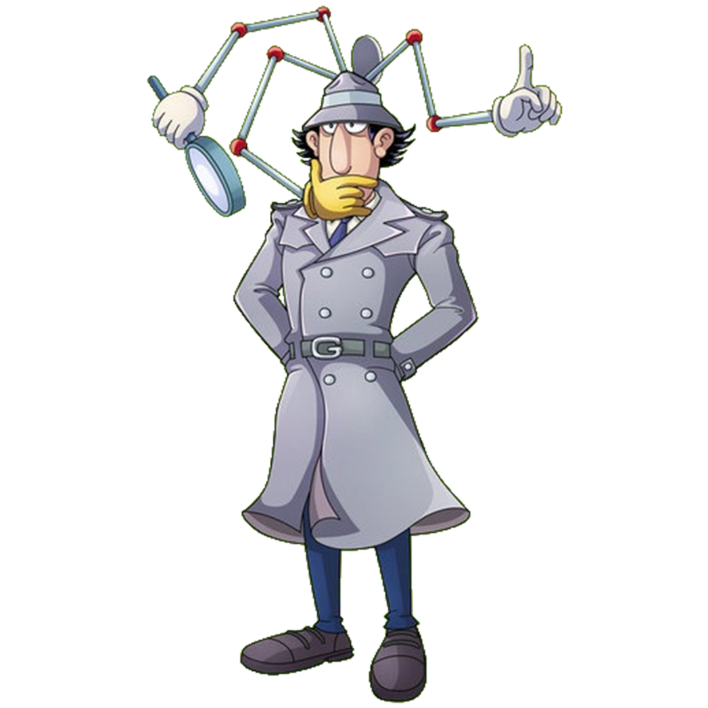

Обо мне
Привет, я так устал делать этот сайт, что мне теперь совершенно лень писать о себе. Собственно могу рассказать про Торвальда Линуса. Он крутой мужик. Как и Деннис Ритчи. А, да, иконки внизу, на них нужно навести мышку. Я в title всё вбил. А ещё внизу анимация с человечком.
Ли́нус Бенедикт То́рвальдс или Ту́рвальдс (швед. Linus Benedict Torvalds [ˈliːn.ɵs ˈtuːr.valds] 28 декабря 1969, Хельсинки, Финляндия) — финно-американский программист. Создатель ядра Linux.
Воодушевлённый прочтением книги Эндрю Таненбаума, посвящённой операционной системе Minix, Линус создал Linux — ядро операционной системы GNU/Linux, являющейся на данный момент самой распространённой из свободных операционных систем, а также наиболее популярной серверной ОС.
С 1997 по 2003 год Линус работал в известной компании Transmeta. После этого организовал Open Source Development Labs. В данный момент работает в The Linux Foundation (с 2007), где занимается разработкой ядра Linux.
Родители Линуса, финские шведы Нильс и Анна Торвальдс, были в 1960-х годах студентами-радикалами, впоследствии стали журналистами. Линус был назван в честь американского химика Лайнуса Полинга. В школе преуспевал в физике и математике. Был малообщительным, скромным мальчиком. Его часто дразнили из-за политических взглядов его отца.
В 1988 году Линус поступил в Хельсинкский университет, который окончил в 1996 году, получив степень магистра кибернетики.
Линус Торвальдс живёт в городе Портленд (США, штат Орегон) с женой Туве[nl] (фин. Tove Torvalds, урождённая Tove Monni), шестикратной чемпионкой Финляндии по каратэ и бывшей студенткой Линуса, тремя дочерями: Патрицией Мирандой (род. 5 декабря 1996), Даниэлой Йоландой (род. 16 апреля 1998) и Селестой Амандой (род. 20 ноября 2000).
С февраля 1997 года по июнь 2003 года работал в компании Transmeta, после чего перешёл в компанию Open Source Development Labs (теперь — The Linux Foundation). Хотя The Linux Foundation находится в Бивертоне (англ. Beaverton), Торвальдс работает дома.
Один из «Законов Линуса», окончательно сформулированный американским хакером Эриком Реймондом, гласит: «При достаточном количестве глаз все ошибки лежат на поверхности». Глубокой ошибкой называется та, которую трудно найти. Однако, если достаточно много людей ищет ошибки, то все они выходят на поверхность. Оба программиста разделяют идеологию открытого исходного кода, отчасти основанную на вере в этот закон.
Однако их взгляды расходятся в том, что важнее: открытость кода или «свободность» программ, их распространения (сторонником последнего является Реймонд).
Опыт работы
И про опыт мне тоже очень лень писать. Могу сказать, что учился на программиста систем автоматизации, но ушёл в сферу системного администрирования. Через какое-то время снова вернулся в программирование и работал програмистом систем автоматизации. В мои обязанности (помимо обязанностей сисадмина, заместителя отдела ИТ и ещё пары должностей в других фирмах) входила разработка внутренней логики оборудования и создание виджетов для них в системе автоматизации OpenSCADA [тыц] на языке JS (так что что-то я знаю:) ).
Помимо этого работал одновременно начальником ИТ отдела в одной медицинской организации и заместителем начальника отдела ИТ в другой фирме. Ну и ещё периодически выполнял обязанности системного администратора группе компаний, в сфере ресторанного бизнеса. Сложно описать все обязанности, но к текущей моей профессии относится лишь руководящие должности и должность программиста.


 
